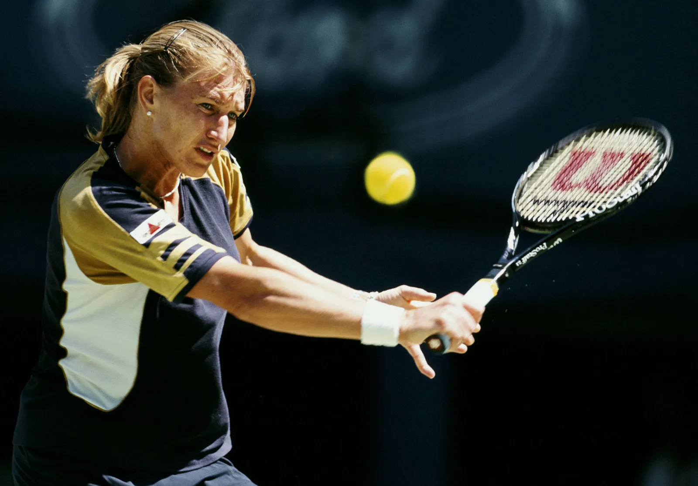

GOATS of Tennis

Novak Djokovic is a Serbian tennis player who was born on May 22, 1987. He turned pro in 2003 and has since become one of the greatest players in the history of the sport. Djokovic has won 20 Grand Slam Singles Titles, tying him with Federer and Nadal for the most all-time. He has also held the world number one ranking for a total of 338 weeks, the most in men's tennis history. Djokovic is known for his incredible athleticism, mental toughness, and ability to perform well under pressure. He has won numerous epic matches and is widely considered to be one of the most complete players to ever play the game.

Serena Williams is a former American tennis player born on September 26, 1981, in Saginaw, Michigan. She turned pro in 1995 and retired in 2021. During her career, she won 73 titles, including 23 Grand Slam singles titles, with 7 Australian, 3 French, 7 Wimbledon, and 6 US Open. She was inducted into the Tennis Hall of Fame in 2022. Serena was ranked number one in the world for a total of 319 weeks and is considered one of the best tennis players of all time.

Rafael Nadal is a former Spanish tennis player born on June 3, 1986, in Manacor, Majorca. He turned pro in 2001 and retired in 2021. Nadal won 92 career titles, including 22 Grand Slam singles titles, with 2 Australian, 14 French, 2 Wimbledon, and 4 US Open. He was ranked number one in the world for 209 weeks and won a record 13 French Open singles titles. Nadal was known for his exceptional play on clay courts and was considered one of the greatest tennis players of all time.

Roger Federer is a former Swiss tennis player born on August 8, 1981, in Basel. He turned pro in 1998 and retired in 2022. Federer won 103 career titles, including 20 Grand Slam singles titles, with 6 Australian, 1 French, 8 Wimbledon, and 5 US Open. He was ranked number one in the world for 310 weeks, including 237 consecutive weeks, a record that may never be surpassed. Federer was considered the greatest of all time for many years, but with the success of Nadal and Djokovic, the debate has become more complicated.

Steffi Graf is a former German tennis player born on June 14, 1969, in Mannheim, West Germany. She turned pro in 1982 and retired in 1999. During her career, she won 107 titles, including 22 Grand Slam singles titles, with 4 Australian, 6 French, 7 Wimbledon, and 5 US Open. She was inducted into the Tennis Hall of Fame in 2004. Steffi was ranked number one in the world for a total of 377 weeks and is considered one of the best tennis players of all time.

Pete Sampras was a former American tennis player born on August 12, 1971, in Potomac, Maryland. He turned pro in 1988 and retired in 2002. During his career, he won 64 titles, including 14 Grand Slam singles titles, with 2 Australian, 7 Wimbledon, and 5 US Open. He was inducted into the Tennis Hall of Fame in 2007. Pete was ranked number one in the world for six consecutive years and was considered the best player of all time. However, his lack of a French Open title and struggles on clay courts make it difficult to place him on the list of the best tennis players of all time.

Rod Laver is a former Australian tennis player born on August 8, 1938, in Rockhampton, Queensland. He turned pro in 1962 and retired in 1979. Laver won 200 career titles, including 11 Grand Slam singles titles with 3 Australian, 2 French, 4 Wimbledon, and 2 US Open. He was ranked number one in the world for seven consecutive years and inducted into the Tennis Hall of Fame in 1981. Laver is the only player to have won the Grand Slam twice, doing it once as an amateur in 1962 and again as a pro in 1969.

Martina Navratilova is a former Czech-American tennis player born on October 18, 1956, in Prague, Czechoslovakia. She turned pro in 1975 and retired in 2006. During her career, she won 167 titles, including 18 Grand Slam singles titles, with 3 Australian, 2 French, 9 Wimbledon, and 4 US Open. She was inducted into the Tennis Hall of Fame in 2000. Martina was ranked number one in the world for a total of 332 weeks and is considered one of the best tennis players of all time.

Monica Seles is a former American tennis player born on December 2, 1973, in Novi Sad, Yugoslavia (now Serbia). She turned pro in 1989 and retired in 2008. During her career, she won 53 titles, including 9 Grand Slam singles titles, with 4 Australian, 3 French, and 2 US Open. She was inducted into the Tennis Hall of Fame in 2009.